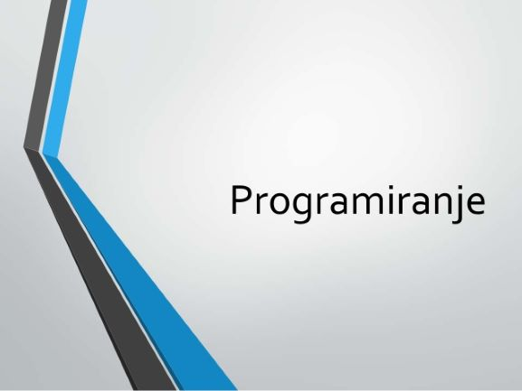

C uvod
Mikroprocesor razume samo binarnu informaciju i operi{e nad nizovima binarnih komandi
koje nazivamo ma{inski kod. Me|utim, treba odmah naglasiti da je izuzetno te{ko pisati programe
velikog obima na ma{inskom kodu. Zbog toga, najve}i broj programera danas koristi vi{e
programske jezike (High Level Language -HLL). Vi{i programski jezici sa kojima se studenti
naj~e{}e sre}u u toku studiranja su Fortran, Pascal, Basic, C i drugi, dok tipi~ni predstavnik jezika
ni`eg nivoa je asemblerski jezik mikroprocesora 80x86 (80386, 80486, Pentium).
